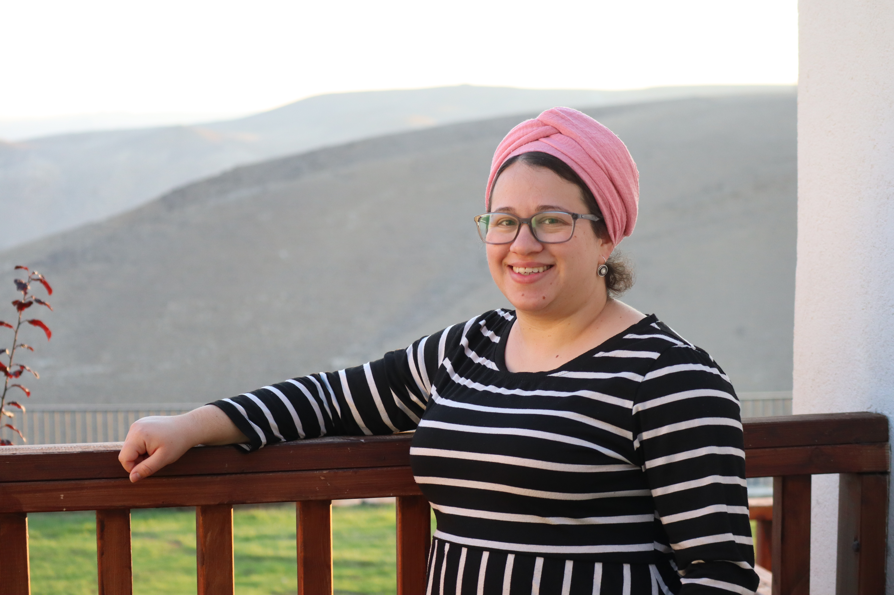

אני דוקטורנטית לעבודה סוציאלית וחוקרת אקדמית. המחקר שלי מתמקד בגישה הקהילתית בשירותי הרווחה ובחינת החיבור בין פרקטיקת המיקרו למאקרו. עם ניסיון מקצועי רב כעובדת סוציאלית קהילתית ומנהלת תוכניות לאזרחים ותיקים, אני שואפת לשלב תובנות מהשטח עם מחקר אקדמי מעמיק לשיפור מערכות הרווחה.
אודותיי

תחומי עניין במחקר
- עבודה סוציאלית קהילתית
- חיבור בין מיקרו למאקרו
- קהילות מקוונות בזמן משבר
- שילוב AI בשירותי רווחה
- גרונטכנולוגיה (Gerontechnology)
- ניתוח רשתות חברתיות (SNA)

פרסומים
-
Nebenzahl-Elitzur, N., Kagan, M., & Zychlinski, E. (2026). Media use and well-being in older adults. International Psychogeriatrics. [cite: 39-40]
DOI: 10.1016/j.inpsyc.2025.100179 -
Nebenzahl-Elitzur, N., Kagan, M., & Zychlinski, E. (2024). Factors Associated with Israeli Social Workers' Intention to Stay in the Profession. Social Work, 69(2), 125-132. [cite: 42-44]
DOI: 10.1093/sw/swae003
הרצאות וסדנאות
- קהילה בעידן הדיגיטלי
- קהילות מקוונות בעת משבר
- AI בעבודה סוציאלית קהילתית
- יזמות וחדשנות לאוכלוסיית הגיל השלישי [cite: 80-82]
כנסים
- 2026: הכנס השנתי ה-30 של SSWR, וושינגטון (קהילות מקוונות). [cite: 65-66]
- 2026: הכנס השנתי ה-30 של SSWR, וושינגטון (הון חברתי לאומי). [cite: 62-64]
- 2026: הכנס השנתי ה-15 של ESPAnet ישראל, רופין. [cite: 60-61]
- 2026: כנס הזיקנה ה-2, אוניברסיטת אריאל. [cite: 58-59]
- 2025: כנס TiSSA, פורטו, פורטוגל (שבירת החומה). [cite: 67-68]
- 2025: הכנס ה-14 של ESPAnet ישראל, תל אביב. [cite: 69-70]
- 2024: כנס איגוד העובדים הסוציאליים, ירושלים. [cite: 71-72]
- 2022: הכנס ה-47 של האגודה לחקר יחסי עבודה. [cite: 73-75]
מוסדות הוראה
- אוניברסיטת אריאל
- אוניברסיטת בר-אילן [cite: 100-101]